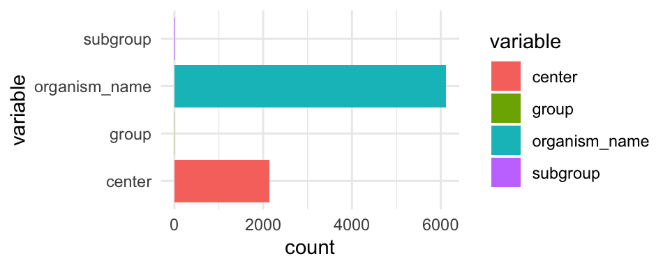
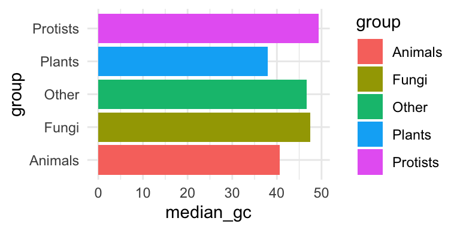
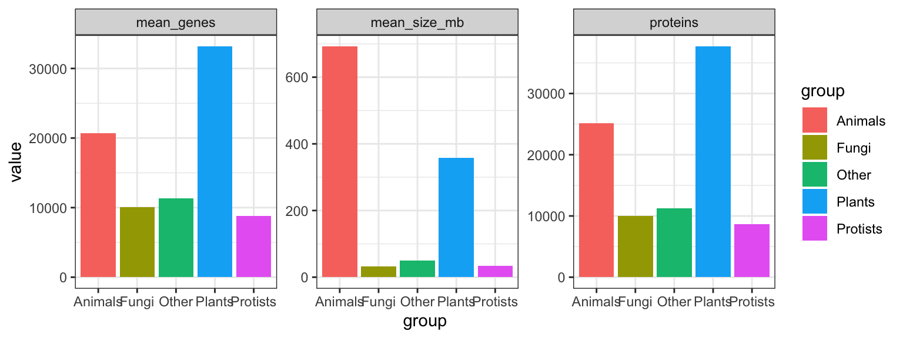
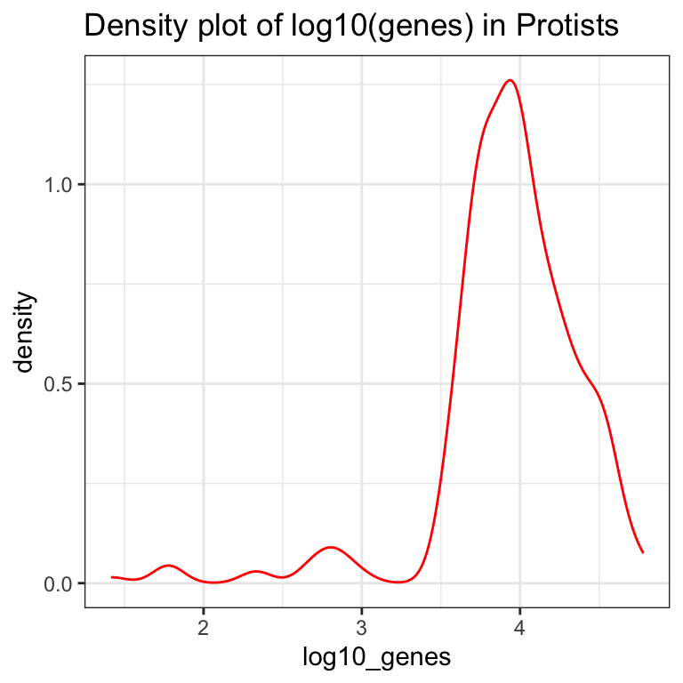

Chapter 7 Functional programming med purrr-pakken


7.1 Inledning og læringsmålene
Emnet omhandler, hvordan man kan integrere funktioner for at forbedre reproducibilitet og gennemsigtighed i dine analyser. Det er ofte tilfældet i biologi, at man arbejder med flere datasæt eller variabler, der henviser til fx forskellige prøver, replikater eller batches, og ønsker at udføre den samme proces på dem alle samtidig.
I dette emne beskæftiger du dig med især pakken Purrr og map() funktioner, som kan benyttes til at lave gentagne baserende analyser i R.
7.1.1 Læringsmål
Du skal være i stand til at:
- Anvende
map()-funktioner til at udføre beregninger iterativt over flere kolonner. - Bruge
group_by()ognest()til at gennemføre reproducerbare analyser over forskellige dele af datasættet. - Kombinere
map()ogmap2()med brugerdefinerede funktioner for at øge fleksibiliteten i analyserne.
7.1.2 Videorressourcer
- Video 1: Introduktion til
map()-funktioner for iteration over kolonner
Link her hvis det ikke virker nedenunder: https://player.vimeo.com/video/549630848
- Video 2: Introduction to custom functions and combining them with map
Link her hvis det ikke virker nedenunder: https://player.vimeo.com/video/549630825
- Video 3: Introduction to nest functions for breaking data into sections
Link her hvis det ikke virker nedenunder: https://player.vimeo.com/video/549630798
7.2 Iterative processer med map() funktioner
Når man udfører en iterativ proces, vil man ofte gentage den samme handling flere gange. Det kan for eksempel være, at vi har ti variabler, og vi ønsker at beregne middelværdien for hver variabel. Vi arbejder med datasættet eukaryotes, som indeholder oplysninger om forskellige organismer, der tilhører eukaryoter - for eksempel deres navne, grupper, undergrupper, antal proteiner/gener, genomstørrelse, og så videre. Du kan indlæse dataene med følgende kommando og se en liste over de forskellige kolonnenavne nedenfor.
eukaryotes <- read_tsv("https://www.dropbox.com/s/3u4nuj039itzg8l/eukaryotes.tsv?dl=1")## Rows: 11508 Columns: 19
## ── Column specification ────────────────────────────────────────────────────────
## Delimiter: "\t"
## chr (10): organism_name, bioproject_accession, group, subgroup, assembly_ac...
## dbl (7): taxid, bioproject_id, size_mb, gc, scaffolds, genes, proteins
## date (2): release_date, modify_date
##
## ℹ Use `spec()` to retrieve the full column specification for this data.
## ℹ Specify the column types or set `show_col_types = FALSE` to quiet this message.Vi tager udgangspunkt i kun fire variabler. For at gøre tingene mere overskuelige har jeg brugt select() til kun at få de fire variabler organism_name, center, group og subgroup ind i en dataframe.
#eukaryotes_full <- eukaryotes
eukaryotes_subset <- eukaryotes %>% select(organism_name, center, group, subgroup)
eukaryotes_subset %>% glimpse()## Rows: 11,508
## Columns: 4
## $ organism_name <chr> "Pyropia yezoensis", "Emiliania huxleyi CCMP1516", "Arab…
## $ center <chr> "Ocean University", "JGI", "The Arabidopsis Information …
## $ group <chr> "Other", "Protists", "Plants", "Plants", "Plants", "Plan…
## $ subgroup <chr> "Other", "Other Protists", "Land Plants", "Land Plants",…Lad os antage, at vi gerne vil beregne antallet af unikke organismer (variablen organism_name). Der er en funktion, der hedder n_distinct(), som beregner antallet af unikke værdier i en vektor/variabel. Her vælger vi variablen organism_name, og tilføjer så n_distinct()-funktionen.
eukaryotes_subset %>%
select(organism_name) %>%
n_distinct()## [1] 6111Lad os forestille os, at vi også er interesseret i antallet af unikke værdier i variablerne center, group og subgroup - som er de tre andre kolonner i datasættet. Vi har forskellige muligheder:
- Vi kan skrive dem ud - men hvad nu hvis vi havde 100 variabler at håndtere?
eukaryotes_subset %>% select(organism_name) %>% n_distinct()
eukaryotes_subset %>% select(center) %>% n_distinct()
eukaryotes_subset %>% select(group) %>% n_distinct()
eukaryotes_subset %>% select(subgroup) %>% n_distinct()## [1] 6111
## [1] 2137
## [1] 5
## [1] 19- Vi har brug for en mere automatiseret løsning på dette. Vi bruger ikke tid på det her, men der er den traditionelle programmeringsløsning: en for-løkke, som også fungerer i R:
col_names <- names(eukaryotes_subset)
for(column_name in col_names)
{
print(eukaryotes_subset %>%
select(column_name) %>%
n_distinct())
}## Warning: Using an external vector in selections was deprecated in tidyselect 1.1.0.
## ℹ Please use `all_of()` or `any_of()` instead.
## # Was:
## data %>% select(column_name)
##
## # Now:
## data %>% select(all_of(column_name))
##
## See <https://tidyselect.r-lib.org/reference/faq-external-vector.html>.## [1] 6111
## [1] 2137
## [1] 5
## [1] 19Man kan i teorien nøjes med for-løkker, men jeg vil gerne præsentere tidyverse-løsningen, som bliver mere intuitiv og lettere at læse, når man først er blevet vant til den (den integrerer også bedre med de andre tidyverse-pakker).
7.2.1 Introduktion til map() funktioner
Tidyverse-løsningen er de såkaldte map()-funktioner, som er en del af purrr-pakken. Jeg introducerer dem her frem for base-R-løsningerne, ikke kun fordi de er en del af tidyverse, men også fordi de er en meget fleksibel og letforståelig tilgang, når man først er blevet vant til dem.
Jeg vil vise, hvordan de fungerer ved hjælp af eukaryotes-datasættet, og derefter introducere dem i konteksten af brugerdefinerede funktioner og nest(), som kan bruges til at opdele datasættet i forskellige dele (oveni hvilke man kan gentage den samme proces).
Man anvender map() ved at angive funktionsnavnet n_distinct inden i map(), og map() beregner så n_distinct() for hver kolonne i datasættet.
eukaryotes_subset %>% map(n_distinct) #do 'n_distinct' for every single column## $organism_name
## [1] 6111
##
## $center
## [1] 2137
##
## $group
## [1] 5
##
## $subgroup
## [1] 19Så kan man se, at vi har fået en list tilbage, der indeholder tal, som viser antallet af unikke værdier for hver af de fire kolonner. Det fungerer lidt som base-R funktionen apply, men med apply skal man bruge 2 på anden pladsen for at angive, at vi gerne vil iterere over kolonnerne.
apply(eukaryotes_subset,2,n_distinct)## organism_name center group subgroup
## 6111 2137 5 19Bemærk, at vi her har fået en vektor af tal tilbage, men med map har vi fået en list. Der er faktisk andre varianter af map, som kan benyttes til at returnere resultatet i forskellige datatyper. For eksempel, kan man bruge map_dbl() til at få en double dbl tilbage - en vektor af tal, ligesom vi fik med apply i ovenstående.
# Apply n_distinct to all variables, returning a double
eukaryotes_subset %>% map_dbl(n_distinct)## organism_name center group subgroup
## 6111 2137 5 19Man kan også bruge map_df() for at få en dataramme (tibble) tilbage - det er særligt nyttigt for os, da vi altid tager udgangspunkt i en dataramme, når vi skal lave et plot.
# Apply n_distinct to all variables, returning a dataframe
eukaryotes_subset %>% map_df(n_distinct)## # A tibble: 1 × 4
## organism_name center group subgroup
## <int> <int> <int> <int>
## 1 6111 2137 5 19For eksempel, kan man tilføje de tal fra map_df direkte ind i et ggplot.
eukaryotes_subset %>%
map_df(n_distinct) %>%
pivot_longer(everything(), names_to = "variable", values_to = "count") %>%
ggplot(aes(x = variable, y = count,fill = variable)) +
geom_col() +
coord_flip() +
theme_minimal()
7.2.2 Reference for de forskellige map-funktioner
Dette er en kort oversigt over de forskellige map-funktioner i R og hvilken type data, de returnerer.
| Funktion | Beskrivelse |
|---|---|
map_lgl() |
returnerer en logisk vektor |
map_int() |
returnerer en integervektor |
map_dbl() |
returnerer en doublevektor |
map_chr() |
returnerer en karaktervektor |
map_df() |
returnerer en dataramme |
7.3 Brugerdefinerede funktioner
Vi kan lave vores egne funktioner og benytte dem indenfor map()-funktionen for at yderligere øge fleksibiliteten i R. For eksempel, kan det være, at vi har en bestemt metode, vi gerne vil bruge til at normalisere vores data, og der eksisterer ikke en relevant funktion i R i forvejen. Ved at lave vores egne funktioner kan vi skræddersy vores dataanalyse til specifikke behov.
7.3.1 Simple funktioner
Vi starter med en simpel funktion fra base-R og forklarer derefter dens struktur i tabellen nedenfor. Vi benytter oftest en anden form for funktioner i tidyverse, som vi ser på næste gang, men konceptet er det samme.
my_function <- function(.x)
{
return(sum(.x)/length(.x))
}| Kode | Beskrivelse |
|---|---|
my_function_name |
funktionens navn |
<- function(.x) |
fortæller R, at vi laver en funktion, der tager data .x som input |
sum(.x)/length(.x) |
beregner gennemsnittet af data .x |
return() |
det output, som funktionen skal give - her gennemsnittet |
Lad os også afprøve vores nye funktion ved at beregne den gennemsnitlige værdi for Sepal.Length i datasættet iris.
my_function(iris$Sepal.Length)
mean(iris$Sepal.Length)## [1] 5.843333
## [1] 5.8433337.3.2 Brugerdefinerede funktioner med mapping
Inden for tidyverse skriver man funktioner på en lidt anden måde. Her er et eksempel på, hvordan den samme funktion kan skrives.
my_function <- ~ sum(.x)/length(.x)~betyder, at vi definerer en funktion..xrepræsenterer de data, som vi anvender funktionen på (for eksempel variablenSepal.Lengthfrairis). Man bruger symbolet.xkonsekvent, og R forstår automatisk, hvad det repræsenterer.
Vi kan bruge my_function inden for map() for at beregne den gennemsnitlige værdi for alle variabler (uden Species), og vi kan se, at vi får et resultat, der svarer til funktionen mean():
iris %>%
select(-Species) %>%
map_df(my_function)
iris %>%
select(-Species) %>%
map_df(mean)## # A tibble: 1 × 4
## Sepal.Length Sepal.Width Petal.Length Petal.Width
## <dbl> <dbl> <dbl> <dbl>
## 1 5.84 3.06 3.76 1.20
## # A tibble: 1 × 4
## Sepal.Length Sepal.Width Petal.Length Petal.Width
## <dbl> <dbl> <dbl> <dbl>
## 1 5.84 3.06 3.76 1.20Man kan også placere funktionen direkte inden for map_df, i stedet for at oprette og henvise til den ved navn (f.eks. my_function):
iris %>%
select(-Species) %>%
map_df(~ sum(.x)/length(.x)) #for hver datakolonne, beregn summen og divider med længden## # A tibble: 1 × 4
## Sepal.Length Sepal.Width Petal.Length Petal.Width
## <dbl> <dbl> <dbl> <dbl>
## 1 5.84 3.06 3.76 1.20Vi kan også specificere andre funktioner.
iris %>%
map_df(~nth(.x,10)) #tag hver kolonne, kald den for .x og find den 10. værdi## # A tibble: 1 × 5
## Sepal.Length Sepal.Width Petal.Length Petal.Width Species
## <dbl> <dbl> <dbl> <dbl> <fct>
## 1 4.9 3.1 1.5 0.1 setosaeller når nth er en tidyverse funktion, kan vi bruge %>%:
iris %>%
map_df(~.x %>% nth(10)) #tag hver kolonne, kald den for .x og find den 10. værdi## # A tibble: 1 × 5
## Sepal.Length Sepal.Width Petal.Length Petal.Width Species
## <dbl> <dbl> <dbl> <dbl> <fct>
## 1 4.9 3.1 1.5 0.1 setosaAntallet af distinkte værdier, som ikke er NA:
#tag hver kolonne, kald den for .x og beregn n_distinct
iris %>%
map_df(~.x %>% n_distinct(na.rm = TRUE)) #n_dinstict er fra tidyverse## # A tibble: 1 × 5
## Sepal.Length Sepal.Width Petal.Length Petal.Width Species
## <int> <int> <int> <int> <int>
## 1 35 23 43 22 3Bemærk, at hvis det er en indbygget funktion og vi benytter standardparametre (altså na.rm = FALSE i ovenstående), kan man blot skrive:
iris %>%
map_df(n_distinct)## # A tibble: 1 × 5
## Sepal.Length Sepal.Width Petal.Length Petal.Width Species
## <int> <int> <int> <int> <int>
## 1 35 23 43 22 3Et andet eksempel: læg 3 til og kvadrer resultatet:
iris %>%
select(-Species) %>%
map_df(~(.x + 3)^2) %>% head()## # A tibble: 6 × 4
## Sepal.Length Sepal.Width Petal.Length Petal.Width
## <dbl> <dbl> <dbl> <dbl>
## 1 65.6 42.2 19.4 10.2
## 2 62.4 36 19.4 10.2
## 3 59.3 38.4 18.5 10.2
## 4 57.8 37.2 20.2 10.2
## 5 64 43.6 19.4 10.2
## 6 70.6 47.6 22.1 11.6Jo mere kompleks en funktion bliver, desto mere mening giver det at definere den uden for map()-funktionen:
my_function <- ~(.x - mean(.x))^2 + 0.5*(.x - sd(.x))^2 #en lang, meningsløs funktion
iris %>%
select(-Species) %>%
map_df(my_function) #beregn my_function for hver kolonne og output en dataramme ## # A tibble: 150 × 4
## Sepal.Length Sepal.Width Petal.Length Petal.Width
## <dbl> <dbl> <dbl> <dbl>
## 1 9.68 4.89 5.63 1.16
## 2 9.18 3.29 5.63 1.16
## 3 8.80 3.84 6.15 1.16
## 4 8.66 3.55 5.13 1.16
## 5 9.41 5.30 5.63 1.16
## 6 10.6 6.71 4.24 0.705
## 7 8.66 4.51 5.63 0.916
## 8 9.41 4.51 5.13 1.16
## 9 8.46 3.06 5.63 1.16
## 10 9.18 3.55 5.13 1.43
## # … with 140 more rows7.3.3 Effekten af map på andre datatyper
I det ovenstående fokuserede jeg på map i forhold til dataframes. I group_by + nest anvender man map() på en liste af dataframes, kaldet data, hvilket tillader os at arbejde med hvert datasæt individuelt. Det er derfor værd at bruge lidt tid på at se, hvordan map() håndterer forskellige datatyper.
Input: vektor
.xrefererer til en værdi i vektoren. Hvis man tager heltallet1:10og anvendermap, så tager man hvert tal for sig og beregner en funktion med det - i det følgende simulerer man et tal fra den normale fordeling med parameterenmean=.x:
c(1:10) %>% map_dbl(~rnorm(1,mean=.x))## [1] 1.746477 2.037710 0.655867 3.612059 4.272457 7.067252 5.249570
## [8] 8.898509 9.868653 10.101649Input: dataframe
.xrefererer til en variabel fra dataframe. I det ovenstående er den første variabelint1, og imaptager man det første element med funktionenpluck(1).
tibble("int1"=1:10,"int2"=21:30) %>% map(~.x %>% pluck(1))## $int1
## [1] 1
##
## $int2
## [1] 21Med nest ser vi på muligheden for at lave map over en liste, der er skabt med funktionen nest().
Input: liste
.xrefererer til et element i listen - i det nedenstående er det første elementc(1,2), så hvis man anvender funktionenmax, så finder man den højeste værdi (2i dette tilfælde).
list(c(1,2),c(2,3),c(3,4)) %>% map(~max(.x))## [[1]]
## [1] 2
##
## [[2]]
## [1] 3
##
## [[3]]
## [1] 4Bemærk, at hvis der kun kommer et tal som resultat, kan man bruge map_dbl i stedet for map - så får man en vektor som output, selvom inputtet er en liste.
list(c(1,2),c(2,3),c(3,4)) %>% map_dbl(~max(.x))## [1] 2 3 4Liste af dataframes
.xrefererer til et datasæt - så kan man referere til de forskellige variabler i.x, som man plejer i tidyverse.
Det følgende er ligesom tilfældet med konceptet “nesting” i den næste sektion. Man tager en liste af tibbles og vælger det første tal fra variablen int.
list(tibble("int"=1:10),tibble("int"=1:10),tibble("int"=1:10)) %>%
map_int(~.x %>% pluck("int",1))## [1] 1 1 17.4 Nesting med nest()
Vi vil i den næste lektion se, at det er meget nyttigt at bruge funktionen nest() til at besvare en række statistiske spørgsmål. Det kan for eksempel være:
- Vi har udført 10 eksperimenter under lidt forskellige betingelser og ønsker at udføre nøjagtig den samme analyse på alle 10.
- Vi har 5 forskellige typer bakterier med 3 replikater hver, og vi ønsker at transformere data på samme måde for hver type bakterie og replikat.
Funktionen nest() kan virke lidt abstrakt i starten, men konceptet er faktisk ret simpelt. Vi kan opdele vores datasæt (som indeholder vores forskellige betingelser/replikater osv.) med group_by() og derefter bruge nest() til at gemme de opdelte “underdatasæt” i en liste. Disse gemmes indenfor en kolonne i en tibble, hvilket gør det bekvemt at arbejde med de forskellige datasæt på samme tid (med hjælp fra map()).

Lad os opdele eukaryotes_subset efter variablen ‘group’ og anvende nest():
eukaryotes_subset_nested <- eukaryotes_subset %>%
group_by(group) %>%
nest()
eukaryotes_subset_nested## # A tibble: 5 × 2
## # Groups: group [5]
## group data
## <chr> <list>
## 1 Other <tibble [51 × 3]>
## 2 Protists <tibble [888 × 3]>
## 3 Plants <tibble [1,304 × 3]>
## 4 Fungi <tibble [6,064 × 3]>
## 5 Animals <tibble [3,201 × 3]>Vi kan se, at vi har to variabler - group og data. Variablen data indeholder faktisk fem datarammer (tibbles). For eksempel indeholder det første datasæt kun observationer, hvor group er lig med “Other”, det andet datasæt har kun observationer, hvor group er lig med “Protists”, osv.
Vi kan kontrollere dette ved at kigge på det første datasæt. Her er to måder at gøre det på:
first_dataset <- eukaryotes_subset_nested$data[[1]]
first_dataset <- eukaryotes_subset_nested %>% pluck("data",1)
first_dataset %>% head()## # A tibble: 6 × 3
## organism_name center subgr…¹
## <chr> <chr> <chr>
## 1 Pyropia yezoensis Ocean University Other
## 2 Thalassiosira pseudonana CCMP1335 Diatom Consortium Other
## 3 Guillardia theta CCMP2712 JGI Other
## 4 Cyanidioschyzon merolae strain 10D National Institute of Genetics,… Other
## 5 Galdieria sulphuraria Galdieria sulphuraria Genome Pr… Other
## 6 Phaeodactylum tricornutum CCAP 1055/1 Diatom Consortium Other
## # … with abbreviated variable name ¹subgroupHvis vi ønsker at vende tilbage til vores oprindelige datasæt, kan vi bruge unnest() og specificere kolonnen data:
eukaryotes_subset_nested %>%
unnest(data) %>%
head()## # A tibble: 6 × 4
## # Groups: group [1]
## group organism_name center subgr…¹
## <chr> <chr> <chr> <chr>
## 1 Other Pyropia yezoensis Ocean University Other
## 2 Other Thalassiosira pseudonana CCMP1335 Diatom Consortium Other
## 3 Other Guillardia theta CCMP2712 JGI Other
## 4 Other Cyanidioschyzon merolae strain 10D National Institute of Gen… Other
## 5 Other Galdieria sulphuraria Galdieria sulphuraria Gen… Other
## 6 Other Phaeodactylum tricornutum CCAP 1055/1 Diatom Consortium Other
## # … with abbreviated variable name ¹subgroupSpørgsmålet er så: hvordan kan vi inkorporere “nested” data i vores analyser?
7.4.1 Anvendelse af map() med nested data
De fleste gange vi arbejder med nested data, er fordi vi ønsker at udføre den samme operation på hvert af de “sub” datasæt. Derfor er det her, funktionen map() kommer ind i billedet. Den typiske proces er:
- Tag det nestede datasæt
- Tilføj en ny kolonne med
mutate(), hvor vi: - Tager hvert datasæt fra kolonnen
dataog brugermap(), i det nedenstående eksempel til at finde antallet af rækker.
eukaryotes_subset_nested %>%
mutate(n_row = map_dbl(data,nrow))## # A tibble: 5 × 3
## # Groups: group [5]
## group data n_row
## <chr> <list> <dbl>
## 1 Other <tibble [51 × 3]> 51
## 2 Protists <tibble [888 × 3]> 888
## 3 Plants <tibble [1,304 × 3]> 1304
## 4 Fungi <tibble [6,064 × 3]> 6064
## 5 Animals <tibble [3,201 × 3]> 3201Vi kan også bruge en brugerdefineret funktion. I det nedenstående eksempel beregner vi antallet af unikke organismer fra variablen organism_name i datasættet. Husk:
~betyder, at vi laver en funktion, som kommer til at fungere for alle fem datasæt.- Tag et datasæt og kald det for
.x- det refererer til et bestemt datasæt fra en af de fem datasæt, som hører under kolonnendatai det nestede datasæt. - Vælg variablen
organism_namefra.x - Beregn
n_distinct
n_distinct_organisms <- ~ .x %>% #tag data
select(organism_name) %>% #vælg organism_name
n_distinct #returner antallet af unikke værdier# Gentag funktionen for hver af de fem datasæt:
eukaryotes_subset_nested %>%
mutate(n_organisms = map_dbl(data, n_distinct_organisms))## # A tibble: 5 × 3
## # Groups: group [5]
## group data n_organisms
## <chr> <list> <dbl>
## 1 Other <tibble [51 × 3]> 35
## 2 Protists <tibble [888 × 3]> 490
## 3 Plants <tibble [1,304 × 3]> 673
## 4 Fungi <tibble [6,064 × 3]> 2926
## 5 Animals <tibble [3,201 × 3]> 1987Her er et andet eksempel. Her handler det om eukaryotes data (ikke subsettet), som har oplysninger om fx GC-indholdet med variablen gc. Her bruger vi pull i stedet for select - det er næsten det samme, men med pull() får vi en vektor, som fungerer med median, som er en base-R-funktion.
# func_gc <- ~ .x %>%
# pull(gc) %>% # ligesom select, men vi har brug for en vektor for at beregne median
# median(.x,na.rm=T) # `na.rm` fjerner `NA` værdier)
func_gc <- ~median(.x %>% pull(gc),na.rm=T)
ekaryotes_gc_by_group <- eukaryotes %>%
group_by(group) %>%
nest() %>%
mutate("median_gc"=map_dbl(data, func_gc))
ekaryotes_gc_by_group## # A tibble: 5 × 3
## # Groups: group [5]
## group data median_gc
## <chr> <list> <dbl>
## 1 Other <tibble [51 × 18]> 46.7
## 2 Protists <tibble [888 × 18]> 49.4
## 3 Plants <tibble [1,304 × 18]> 37.9
## 4 Fungi <tibble [6,064 × 18]> 47.5
## 5 Animals <tibble [3,201 × 18]> 40.6Og jeg kan bruge resultatet i et plot, ligesom vi plejer:
ekaryotes_gc_by_group %>%
ggplot(aes(x=group,y=median_gc,fill=group)) +
geom_bar(stat="identity") +
coord_flip() +
theme_minimal() 
flere statistik på en gang
Lave funktionerne:
func_genes <- ~median(.x %>% pull(genes), na.rm=T)
func_proteins <- ~median(.x %>% pull(proteins),na.rm=T)
func_size <- ~median(.x %>% pull(size_mb), na.rm=T) Anvende nest():
eukaryotes_nested <- eukaryotes %>%
group_by(group) %>%
nest() Tilføje resultatet over de fem datasæt med mutate():
eukaryotes_stats <- eukaryotes_nested %>%
mutate(mean_genes = map_dbl(data,func_genes),
proteins = map_dbl(data,func_proteins),
mean_size_mb = map_dbl(data,func_size))Husk at fjerne kolonnen data før man anvende pivot_longer() (ellers får man en advarsel):
eukaryotes_stats %>%
select(-data) %>%
pivot_longer(-group) %>%
ggplot(aes(x=group,y=value,fill=group)) +
geom_bar(stat="identity") +
facet_wrap(~name,scales="free",ncol=4) +
theme_bw()
7.5 Andre brugbar purrr
7.5.1 map2() funktion for flere inputs
Funktionen map2() kan bruges ligesom map(), men tager to “inputs” i stedet for kun én. I det følgende eksempel angiver jeg to kolonner fra datasættet eukaryotes_stats, mean_genes og proteins, og beregner sum(), som bliver gemt takket være funktionen mutate i kolonnen colstat.
eukaryotes_stats %>% mutate(colstat = map2_dbl(mean_genes,proteins,sum))## # A tibble: 5 × 6
## # Groups: group [5]
## group data mean_genes proteins mean_size_mb colstat
## <chr> <list> <dbl> <dbl> <dbl> <dbl>
## 1 Other <tibble [51 × 18]> 11354. 11240. 49.7 22594
## 2 Protists <tibble [888 × 18]> 8813 8628. 33.5 17442.
## 3 Plants <tibble [1,304 × 18]> 33146. 37660 358. 70806.
## 4 Fungi <tibble [6,064 × 18]> 10069 10034 32.2 20103
## 5 Animals <tibble [3,201 × 18]> 20733 25161 692. 45894Bemærk, at præcis det samme resultat kan opnås ved blot at lægge de to kolonner sammen:
eukaryotes_stats %>% mutate(colstat2 = mean_genes + proteins)## # A tibble: 5 × 6
## # Groups: group [5]
## group data mean_genes proteins mean_size_mb colstat2
## <chr> <list> <dbl> <dbl> <dbl> <dbl>
## 1 Other <tibble [51 × 18]> 11354. 11240. 49.7 22594
## 2 Protists <tibble [888 × 18]> 8813 8628. 33.5 17442.
## 3 Plants <tibble [1,304 × 18]> 33146. 37660 358. 70806.
## 4 Fungi <tibble [6,064 × 18]> 10069 10034 32.2 20103
## 5 Animals <tibble [3,201 × 18]> 20733 25161 692. 45894Der er dog mange indviklet situationer hvor man ikke kan gå udenom map2:
eukaryotes_stats_with_plots <- eukaryotes_stats %>%
mutate(log10_genes = map(data,~log10(.x %>% pull(genes)))) %>%
mutate(myplots = map2(group,log10_genes,
~ tibble("log10_genes"=.y) %>%
ggplot(aes(x=log10_genes)) +
geom_density(colour="red",alpha=0.3) +
theme_bw() + ggtitle(paste("Density plot of log10(genes) in",.x))))eukaryotes_stats_with_plots %>% pluck("myplots",2)## Warning: Removed 613 rows containing non-finite values (`stat_density()`).
Der er flere map funktion der tager flere input fk. pmap - jeg har ikke tid til at dække dem men du kan godt læse om dem hvis du har bruge for dem: https://purrr.tidyverse.org/reference/map2.html
7.5.2 Transformering af numeriske variabler
Som en sidste bemærkning, her er en nyttig variant af map - her kan man udføre en operation på kun bestemte variabler - for eksempel anvender jeg i det følgende funktionen log2() på alle numeriske variabler. Bemærk, at man er nødt til at anvende as_tibble() igen bagefter (som kun fungerer, hvis alle variabler stadig har samme længde efter map_if()):
eukaryotes %>% map_if(is.numeric,~log2(.x)) %>% as_tibble()## # A tibble: 11,508 × 19
## organism_…¹ taxid biopr…² biopr…³ group subgr…⁴ size_mb gc assem…⁵ repli…⁶
## <chr> <dbl> <chr> <dbl> <chr> <chr> <dbl> <dbl> <chr> <chr>
## 1 Pyropia ye… 11.4 PRJNA5… 19.2 Other Other 6.75 6.02 GCA_00… chromo…
## 2 Emiliania … 18.1 PRJNA7… 16.2 Prot… Other … 7.39 6.01 GCA_00… <NA>
## 3 Arabidopsi… 11.9 PRJNA1… 13.4 Plan… Land P… 6.90 5.17 GCA_00… chromo…
## 4 Glycine max 11.9 PRJNA1… 14.3 Plan… Land P… 9.94 5.13 GCA_00… chromo…
## 5 Medicago t… 11.9 PRJNA1… 13.4 Plan… Land P… 8.69 5.09 GCA_00… chromo…
## 6 Solanum ly… 12.0 PRJNA1… 6.89 Plan… Land P… 9.69 5.16 GCA_00… chromo…
## 7 Hordeum vu… 16.8 PRJEB3… 19.1 Plan… Land P… 12.1 5.48 GCA_90… chromo…
## 8 Oryza sati… 15.3 PRJNA1… 13.6 Plan… Land P… 8.55 5.45 GCA_00… chromo…
## 9 Triticum a… 12.2 PRJNA3… 18.6 Plan… Land P… 13.9 5.53 GCA_00… chromo…
## 10 Zea mays 12.2 PRJNA1… 13.4 Plan… Land P… 11.1 5.55 GCA_00… chromo…
## # … with 11,498 more rows, 9 more variables: wgs <chr>, scaffolds <dbl>,
## # genes <dbl>, proteins <dbl>, release_date <date>, modify_date <date>,
## # status <chr>, center <chr>, biosample_accession <chr>, and abbreviated
## # variable names ¹organism_name, ²bioproject_accession, ³bioproject_id,
## # ⁴subgroup, ⁵assembly_accession, ⁶replicons7.6 Problemstillinger
Problem 1) Lave Quiz på Absalon “Quiz - functional programming”
Problem 2) Basis øvelser med map() Indlæse diamonds med data(diamonds).
Eksempel:
diamonds %>% select(cut,color,depth) %>% map_df(n_distinct)## # A tibble: 1 × 3
## cut color depth
## <int> <int> <int>
## 1 5 7 184Husk også referencen med de forskellige varianter af map() som kan bruges for at få en anden output type.
Brug map() funktioner til at beregne følgende:
a) Andvend select for at udvælge variabler cut, color og clarity, og dernæst beregn antallet af unikke værdier til hver (n_distinct-funktionen). Dit resultat skal være en list (lst - anvende standard map() funktion).
b) Udvalg variablerne som er numeriske og dernæst beregne gennemsnittet til hver. Dit resultat skal være en double (dbl).
c) Beregne datatypen (funktionen typeof()) til alle variabler. Resultatet skal være en dataframe.
d) Beregn variansen for hver numeriske variabel i iris datasættet ved hjælp af en passende map()-funktion.
data(iris)
iris %>% select(where(is.numeric)) %>% map_dbl(var)## Sepal.Length Sepal.Width Petal.Length Petal.Width
## 0.6856935 0.1899794 3.1162779 0.5810063Problem 3) map() øvelse med brugerdefinerede funktioner Indlæse diamonds med data(diamonds).
Husk, at når man inddrager nogle data .x, for eksempel når man vil bruge en custom funktion eller specificer ikke-standard indstillinger såsom na.rm=TRUE (for at fjerne NA værdier i beregningen) i funktionen, skal man angiv ~ i starten:
diamonds %>% map_df(n_distinct) #specificere funktion unden instillinger
diamonds %>% map_df(~n_distinct(.x,na.rm = TRUE)) #custom funktiona) Afprøve følgende kode linjer og beskrive hvad der sker:
diamonds %>% select(carat, depth, price) %>% map_df(~mean(.x,na.rm=T))
diamonds %>% filter(cut=="Ideal") %>% select("color","clarity") %>% map(~nth(.x,100))
diamonds %>% select(carat, depth, price) %>% map_df(~ifelse(.x>mean(.x),"big_value","small_value"))Brug brugerdefinerede funktioner inden for map() til at beregne følgende:
- Vælg variablerne
carat,depth,tableogprice, og for hver kolonne, læg tre til værdierne og kvadrer derefter resultatet (^2). Det endelige resultat skal være en dataramme. - Vælg de numeriske variabler og returner
TRUE, hvis den første værdi i kolonnen (angivet mednth(.x,1)) er større end medianværdien i samme kolonne. Hvis ikke, returnerFALSE. Det endelige resultat skal være en logisk værdi.
Problem 4) Brug af map på forskellige datatyper Vi har set, at når vi anvender map() på en dataframe, anvendes en funktion på hver kolonne. Lad os se, hvad der sker, når vi har forskellige datatyper:
a) (En vektor af tal)
- Kør det følgende - hvad sker der?
c(1:10) %>% map_dbl(~rnorm(1,mean=.x,sd=1))- Tag udgangspunkt i
c(1:10)og brugmap_dbltil at beregnelog()for hvert tal i vektoren (angiv indstillingenbase=5):
c(1:10) %>% ???b) (En liste af tibbles)
my_list_of_tibbles <- list( tibble("letter" = c("a","a","a"), "number" = c(1,3,3)),
tibble("letter" = c("a","b","b"), "number" = c(3,3,1)),
tibble("letter" = c("a","b","a"), "number" = c(2,3,3)))- Kør følgende kode, der tager den første
tibble, udvælger observationer hvorletter= “a”, og beregner dernæst middelværdien af “number”.
my_list_of_tibbles %>% pluck(1) %>% filter(letter=="a") %>% summarise(mn = mean(number))- Nu hvor jeg kan se, at min kode virker for den første
tibble, kan jeg ændre den til en funktion og anvende den medmap()for at udføre samme proces på alle dataframes i listen. Prøv at køre følgende:
my_list_of_tibbles %>% map(~.x %>% filter(letter=="a") %>% summarise(mn = mean(number)))- Tag udgangspunkt i
my_list_of_tibbles, og for hver tibble, vælg alle tilfælde, hvor variablennumberer 3, og tæl dernæst, hvor mangeader er tilbage i variablenletter. Du kan afprøve på den førstetibble, hvis det hjælper.
Problem 5) group_by/nest øvelse
a) For datasættet iris, anvend group_by(Species) og tilføj dernæst nest(), og kigger på resultatet.
b) Tag udgangspunkt i dit nested dataframe fra a)
- tilføj
pull(data)og se på resultatet - fjern
pull(data)og tilføjpluck("data",1)i stedet for, for at se den første dataramme. - fjern
pluck("data",1)og tilføjunnest(data)i stedet for og se på resultatet - fjern
unnest(data)og tilføj følgende i stedet for og prøve at forstå hvad der sker:mutate(new_column_nrow = map_dbl(data,nrow))mutate(new_column_ratio = map(data,~(.x$Sepal.Width/.x$Sepal.Length)))
Problem 6) Åbn datasættet msleep ved at bruge data(msleep).
a) Beregn gennemsnitsværdierne for de numeriske variabler i msleep-datasættet (data(msleep)). Husk at anvende parameteren na.rm=T i mean()-funktionen for at fjerne manglende værdier i beregningen.
b) Foretag samme beregning som i a), men kun for tilfælde, hvor variablen vore er “carni”.
c) Brug funktionerne group_by() og nest() til at opdele datasættet efter variablen vore.
d) Tag udgangspunkt i din nestede dataframe fra c) og anvend map()-funktionen inden for mutate() for at oprette tre nye kolonner:
num_rows- antallet af rækker i hver delmængdeunique_genus- antallet af unikke værdier i variablengenusi hver delmængdemean_sleep- gennemsnitlig søvn (variablensleep_total) i hver delmængde
e) Tag udgangspunkt i dit resultat fra d) og lav plots af dine opsummeringsstatistikker.
f) I dette tilfælde, kunne samme plots fra e) også opnås ved at bruge group() og summarise()-funktioner på den oprindelige datasæt msleep. Prøv det.
Problem 6) a) Anvend group_by og nest() for at opdel msleep efter variablen vore og brug følgende funktion sammen med map() for at oprette en ny kolonne i din nested dataframe, der hedder my_plots.
b) Brug funktionen grid.arrange() fra R-pakken gridExtra til at vise plottene fra din nye kolonne (angive at parameteren grobs skal være din nye kolonne). Gør din plots pænere ved at tilføje et tema/farver osv. til my_plot_func fra a).
Problem 7) Skift mellem long og wide form Tag udgangspunkt i datasættet iris:
data(iris)
iris <- iris %>% mutate(id=1:nrow(iris)) #tilføj en idVi tilføjer kolonnen id så at hver plante (række) kan identificeres når vi går fra long- til wide- form i b).
a) Anvend group_by() og nest() til at opdele datasættet efter Species og bruge følgende funktion med map() for at tilføje en ny kolonne med navnet new_column_long.
#put data into long form
my_func_longer <- ~.x %>% pivot_longer(cols=-id)b) Skriv en ny funktion og anvend den på kolonnen new_column_long (ikke data), der laver hvert (long-form) datasæt i kolonnen om til wide-form igen (lav ny kolonne new_column_wide). Her skal du bruge parameteren id_cols=id for at korrekte identificere de forskellige plante (uden id ved funktionen ikke, om eksempelvis en bestemt Sepal.Length værdi og en bestemt Sepal.Width værdi referere til precis samme plante og derefore skal have samme række i wide-form).
my_func_wider <- ??? #lave long data om til wide form (husk at angiv names_from,values_from,id_cols)
iris_nested %>% ???#anvend din funktion c) Anvend pluck()-funktionen på kolonnerne new_column_long og new_column_wide til at kigge på den første datasæt for at se, om du har outputtet i long/wide form som forventede.
Problem 8) Forberedelse til næste lektion For at bedre kunne se værdien af at bruge group_by()/nest() + map() kan vi gennemgå en simpel eksampel som indledning til vores næste lektion.
a) Vi bruger følgende funktion:
my_func <- ~ t.test(.x$Petal.Width,.x$Sepal.Length)- anvend
group_by(Species)og dernæstnest()på datasættetiris. - tilføj
mutate()til at lave en ny kolon som heddert_testog bruge funktionen indenformap()på kolonnendata. - tilføj
pull(t_test)til din kommando - man får de tre t-tests frem, som man lige har beregnet. - prøv
unnest(t_test)i stedet forpull(t_test)- man får en advarsel fordi de t-test resultater ikke er i en god form til at vise indenfor en dataramme. Vi vil gerne ændre deres output til tidy-form først.
b) Nu installer R-pakken broom (install.packages("broom")) og indlæs pakken. Vi vil gerne bruge funktionen glance(), der få statistikkerne fra t.test() ind i en pæn form.
- Lav samme som i a) men bruge følgende funktion i stedet for:
library(broom)
my_func <- ~ t.test(.x$Petal.Width,.x$Sepal.Length) %>% glance()Tilføj
pullellerunnesttil din kommando som før og se på resultatet.Man får en pæn dataramme frem med alle de forskellige statistikker fra
t.test().Vælge en statistik og omsætte den til et plot.
Problem 9 Kun ekstra hvis du vil øve mere group_by/nest + map på datasættet mtcars –>
a) Åbn mtcars med data(mtcars) og anvende group_by()/nest() for at opdele datasættet i tre efter variablen cyl.
b) Lave nye kolonner med map og inddrage hensigtsmæssige funktioner, som beskriver dine tre datasæt, der er lagret i kolonne data (outputtet skal være dbl):
- Antal observationer
- Korrelationskoefficient mellem
wtogdrat(funktionencor) - Antal unikke værdier fra variablen
gear
c) Omsætte dine statistikke til et plot for at sammenligne de tre datasæt.
7.7 Ekstra notater og næste gang
https://r4ds.had.co.nz/iteration.html https://sanderwuyts.com/en/blog/purrr-tutorial/